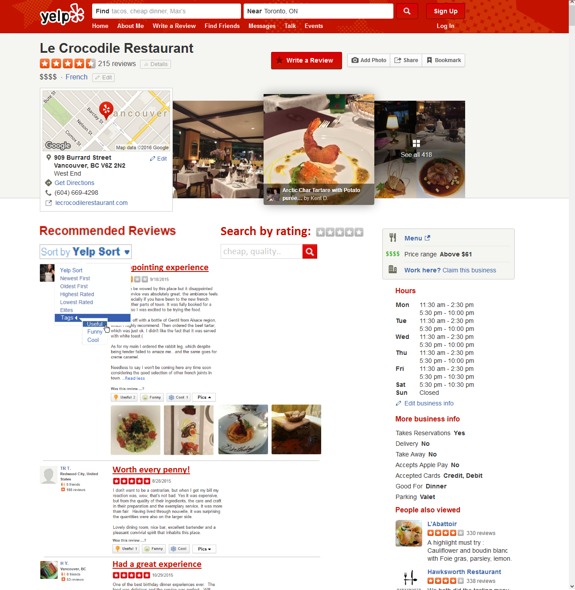
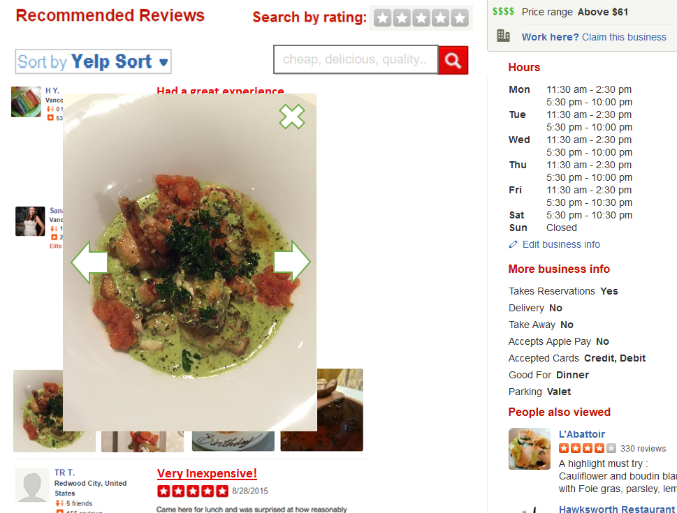
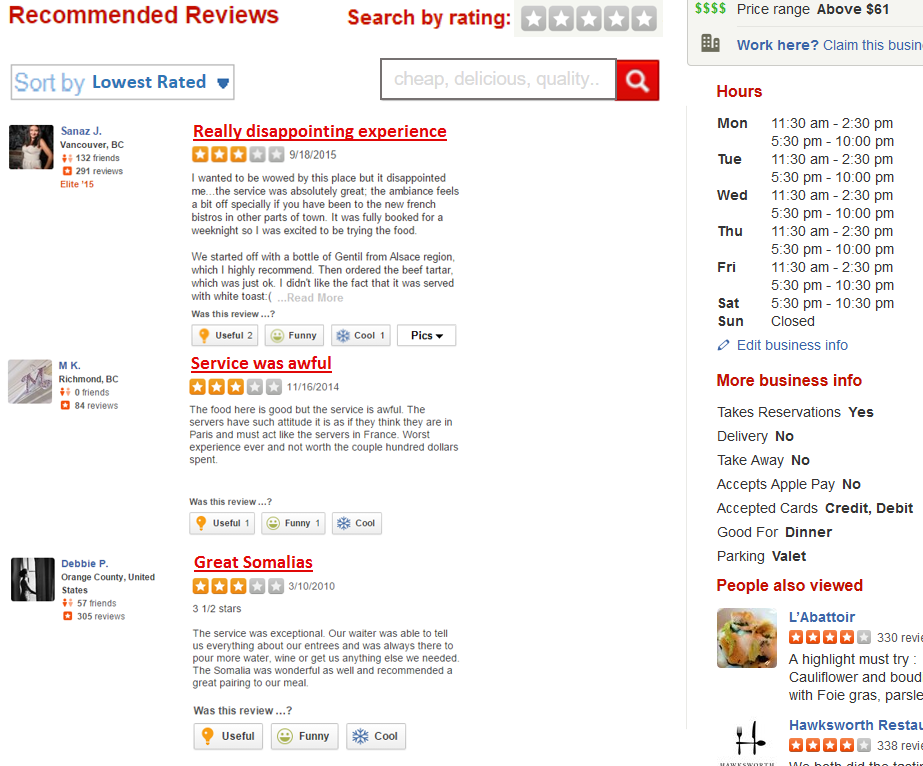
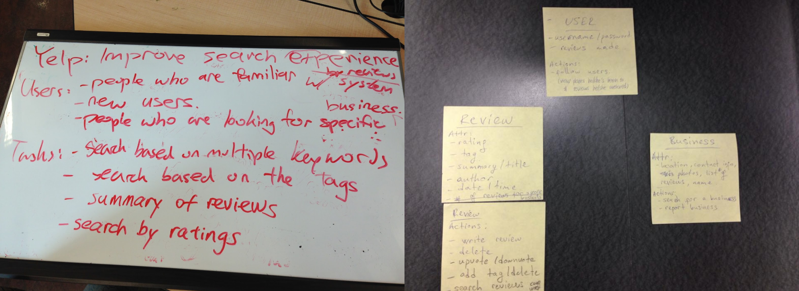
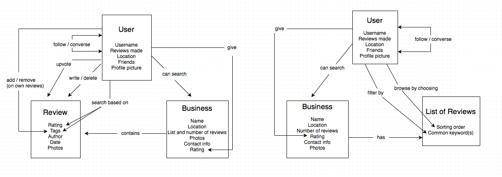

Redesigning Yelp's Interface
_________________________________________________________________________________________________________________________________________________________
About the project
Yelp's review section was redesigned in order to improve upon the user experience of searching and/or browsing of reviews by new and existing users (e.g. refining complex searches or exploring restaurant choices when users are in need of suggestions).
My role
I contributed in leading a 4-person team in the design process, addressed any concerns and uncertainty that were brought up and did my best to keep everyone heading towards the same direction.



REQUIREMENTS
We wanted the following requirements to be implemented into our interface as we felt they were useful features in terms of helping users browse the review section:
1. Allows for more specific searches of the reviews
2. Provides a quick summary of each review
3. Does not require too many actions required by the user
4. Provides visible and clear instructions and options for the users
PLANNING
Here are some of the planning out we did before making an initial prototype. We focused on who the users were and what features we wanted to incorporate into the design. Two conceptual models were drawn to represent the interaction between user and interface.


EVALUATION GOALS
1. Does the new layout for individual reviews reduce the amount of scrolling and help with browsing efficiency? If yes, how? If no, why not?
2. Do the various added sorting and filtering features help with browsing efficiency? If yes, how? If no, why not?
3. What steps do users take when searching reviews that mention two characteristics of the business? Will they be able to leverage the newly added features? Will they be able to see it?
LOW FIDELITY PROTOTYPE
EVALUATION
We had a total of 8 participants. Since it was difficult to recruit users that could represent our task examples, we recruited students 17 or above who might be looking for a place to eat based on the reviews of a restaurant. Evaluations were conducted in small study rooms as it was a convenient and quiet location where interruptions would be minimal. Each evaluation took approximately 20 minutes to complete. This was a sufficient amount of time as it allowed for 4 sub-tasks involving observations and a questionnaires followed by an interview to be done.
MEDIUM FIDELITY PROTOTYPE
RESULTS
The one-line summaries were helpful in terms of skimming the reviews quickly. Similarly, most users found that being able to filter the reviews by their rating was easy to use. This may be because of the visibility it offered on the interface and how straightforward it was to use it. However, there were also weaknesses with the design. From participant's feedback, we found that the multi-word searching feature was not visible enough and the placeholder was too subtle to give users hints of its utility. Although users who did discover this feature, thought it was very helpful. Another problem with visibility were the buttons for displaying hidden pictures and extendable text bodies. We found that these two features did not stand out enough, thus making it difficult to find and utilize by the users.
Thanks for reading!
Feel free to check out more of my work below!
Collaborative Video
A video platform focused on how users interact with educational videos.
Redesigning Yelp's Interface
An improvement upon the UX of Yelp's review interface.
Product Launcher
The design of a software that launches multiple products.
Mobile Platformer Game
A personal project of a 2D mobile platformer game.
Previous
Next